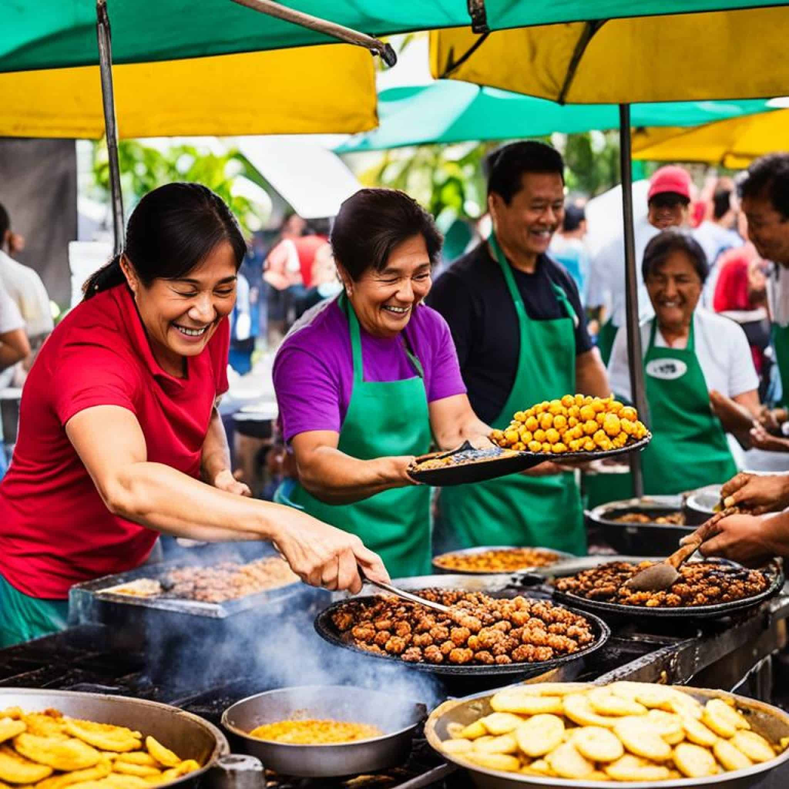

The Rise of Gourmet Street Food

Street food has evolved dramatically over the past decade, transforming from quick, inexpensive snacks into vibrant culinary experiences that attract food lovers from around the world. What was once associated primarily with convenience and affordability has become a creative platform for chefs and entrepreneurs to experiment with flavors, cultures, and presentation. Today’s street food scene blends tradition with innovation, turning sidewalks, food trucks, and night markets into hubs of gastronomic exploration.
Historically, street food played a simple yet essential role in urban life. Vendors offered quick meals to workers, travelers, and locals who needed something filling and affordable. From grilled skewers in Southeast Asia to hot dogs in American cities, street food reflected the culture and ingredients of its region. These foods were beloved not only for their flavor but also for the sense of community they created—people gathering around carts and stalls, sharing meals and conversations. In recent years, however, the perception of street food has shifted. As global travel, social media, and food-focused television programs have grown in popularity, street vendors have gained international recognition. Chefs are now using street food as a canvas for culinary creativity, elevating traditional recipes while still maintaining their accessibility and charm. Many street vendors take inspiration from fine dining techniques, using high-quality ingredients, unique cooking methods, and visually appealing presentation to craft dishes that rival those found in upscale restaurants.
One of the most exciting developments in modern street food is the rise of fusion cuisine. By combining flavors and techniques from different cultures, chefs are creating bold and unexpected dishes that capture the curiosity of adventurous diners. Artisan tacos filled with Korean barbecue, ramen burgers served between noodle “buns,” and gourmet grilled cheese sandwiches with truffle-infused ingredients are just a few examples of how traditional street fare is being reinvented. These creative twists allow chefs to experiment freely while still serving food that is approachable and satisfying.
Major cities around the world have become epicenters of this street food revolution. In cities like Los Angeles, Mexico City, Bangkok, Seoul, and New York, food trucks and market stalls draw crowds eager to try the latest culinary trend. Night markets in Asia offer everything from sizzling seafood skewers to sweet desserts, while urban food truck parks in the United States showcase innovative takes on comfort food classics. Each city contributes its own local ingredients, culinary traditions, and cultural influences, resulting in a rich and diverse street food landscape.
Technology and social media have also played a major role in the growth of gourmet street food. Platforms like Instagram, TikTok, and food blogs allow vendors to showcase their dishes to a global audience. Eye-catching photos of colorful tacos, overflowing ramen bowls, and creative desserts can quickly turn a small vendor into a viral sensation. Food lovers often travel specifically to try dishes they discover online, making street food an important part of modern food tourism.
Another factor driving the popularity of street food is its accessibility. Unlike fine dining restaurants that may require reservations or high prices, street food remains approachable for a wide range of people. Visitors can sample multiple dishes from different vendors in a single outing, turning a simple meal into an adventure of flavors. This accessibility allows chefs to experiment and receive immediate feedback from customers, constantly refining their creations.
In addition, many modern street vendors place a strong emphasis on sustainability and locally sourced ingredients. Farmers’ markets, seasonal produce, and environmentally friendly packaging are becoming increasingly common in the street food scene. This shift reflects a broader movement in the culinary world toward responsible food practices and conscious consumption. Looking ahead, the future of street food appears brighter than ever. As chefs continue to innovate and cities embrace vibrant food cultures, street food will likely remain at the forefront of culinary trends. From artisan tacos to fusion ramen burgers, the movement continues to grow as food lovers search for unique dining adventures that combine flavor, creativity, and cultural storytelling. In this article, we explore the top cities leading the street food revolution and highlight the must-try dishes capturing the attention of diners this year. Whether you are a seasoned foodie or simply someone who enjoys discovering new flavors, the world of street food offers an exciting journey—one bite at a time.
Read A Similar Article